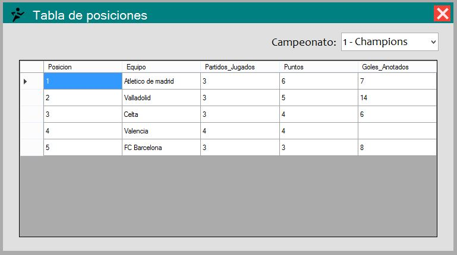
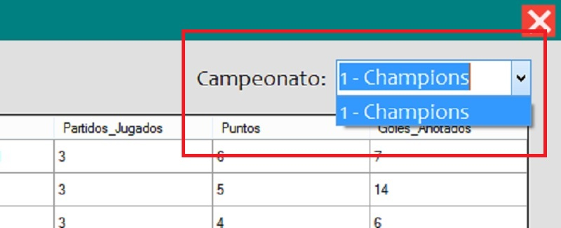

Al abrir la ventana principal del usuario (donde se muestran todas las ventanas), usted podrá observar la barra de menú en la parte superior de ésta:

Damos click en la pestaña "Estadisticas", a continuación click en la opción "Tabla de Posiciones":

Podremos ver a detalle la tabla de posiciones del campeonato donde esté el equipo que eligío en la ventana "Selección de Equipo" Si su equipo está inscrito en otros campeonatos puede seleccionar otro campeonato desde la lista en la parte superior derecha dando click en la flecha apuntando hacia abajo, dando click en el nombre del campeonato a buscar
 